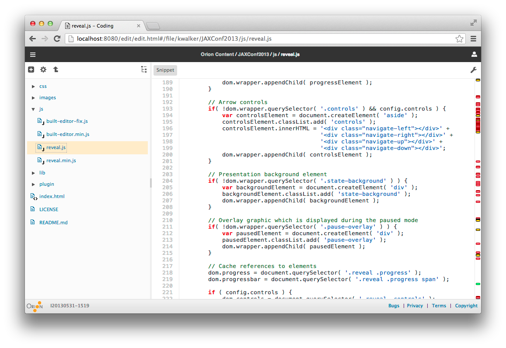
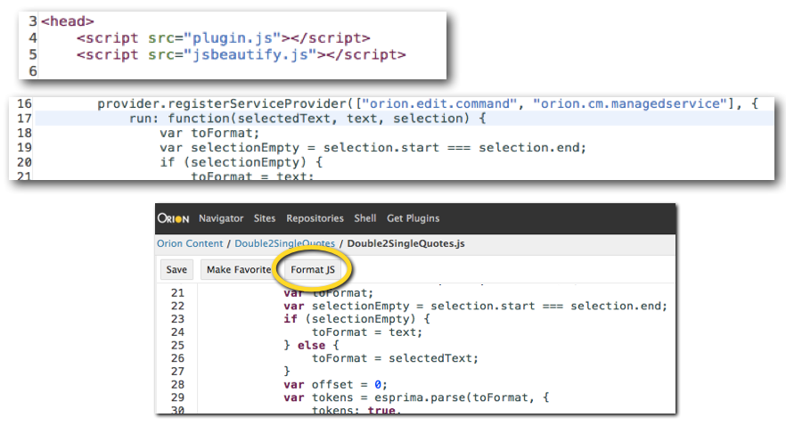
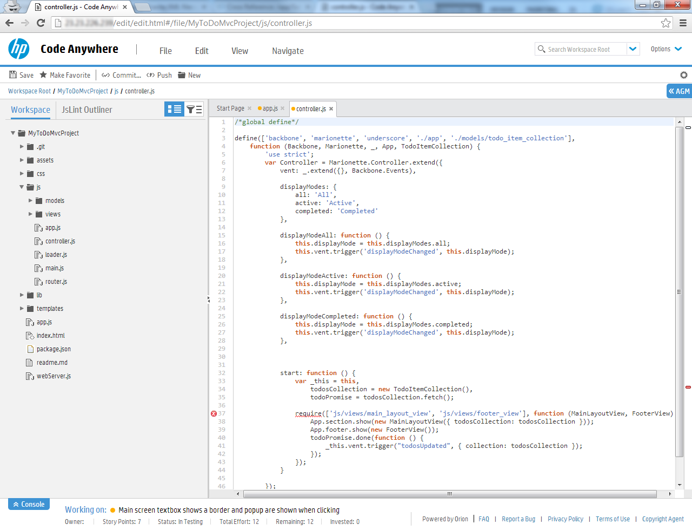
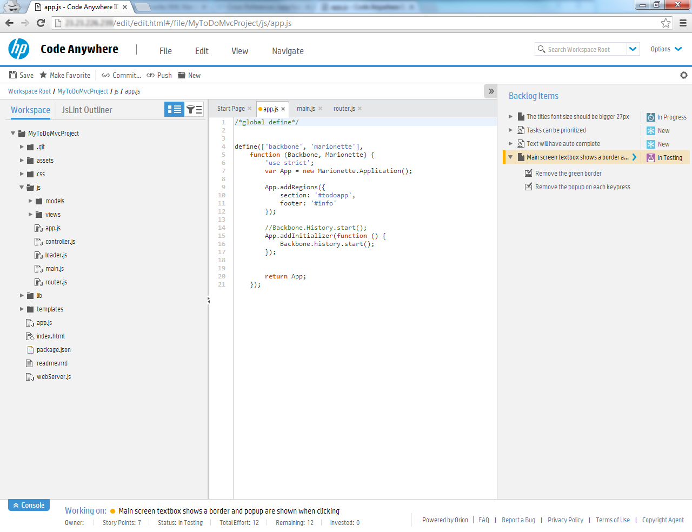
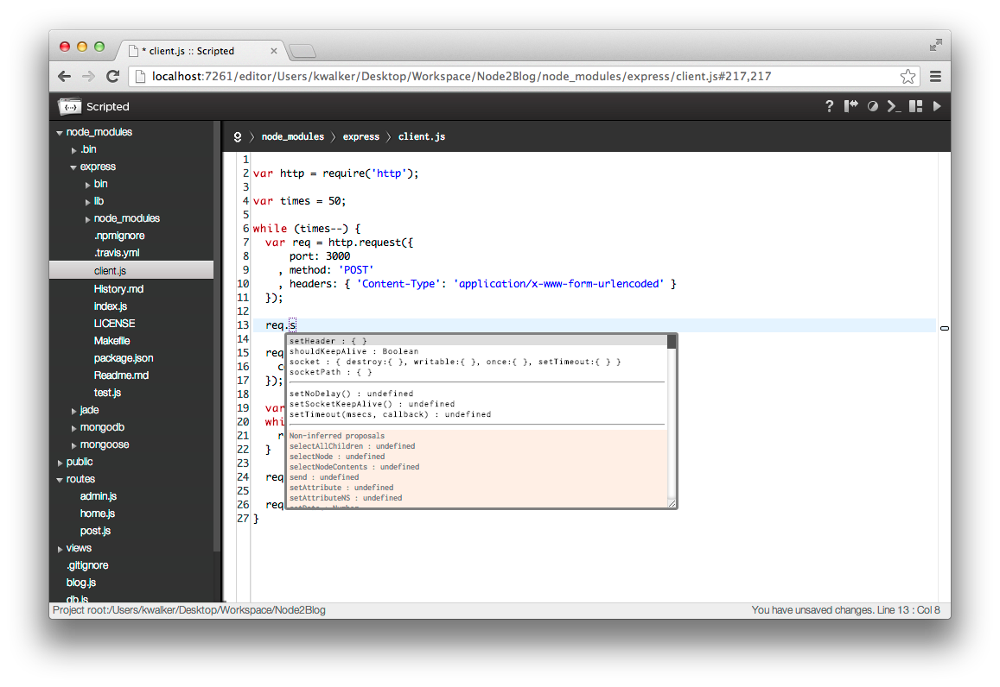
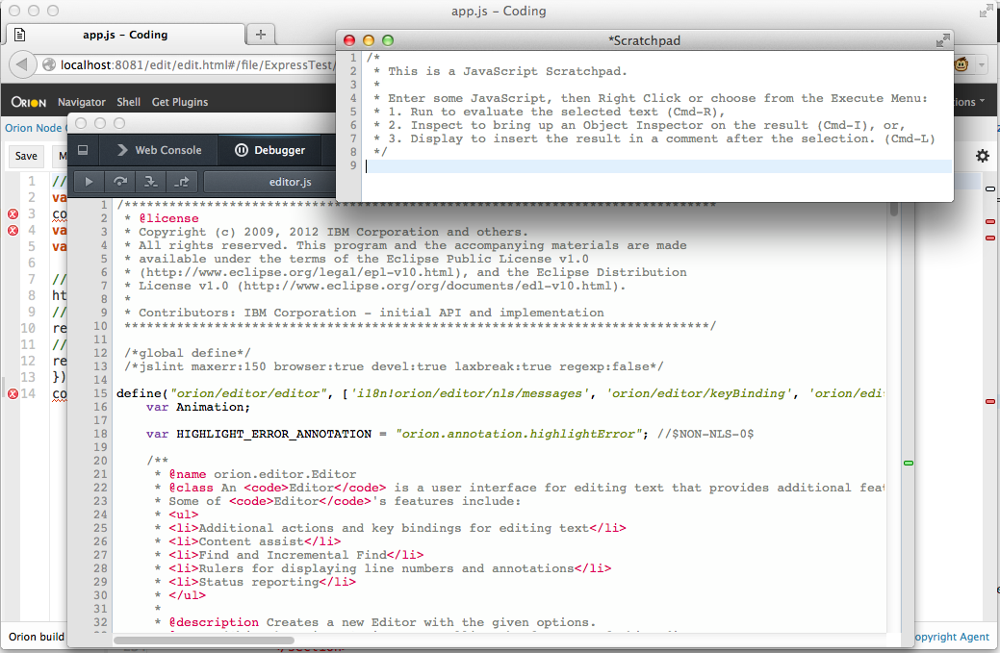
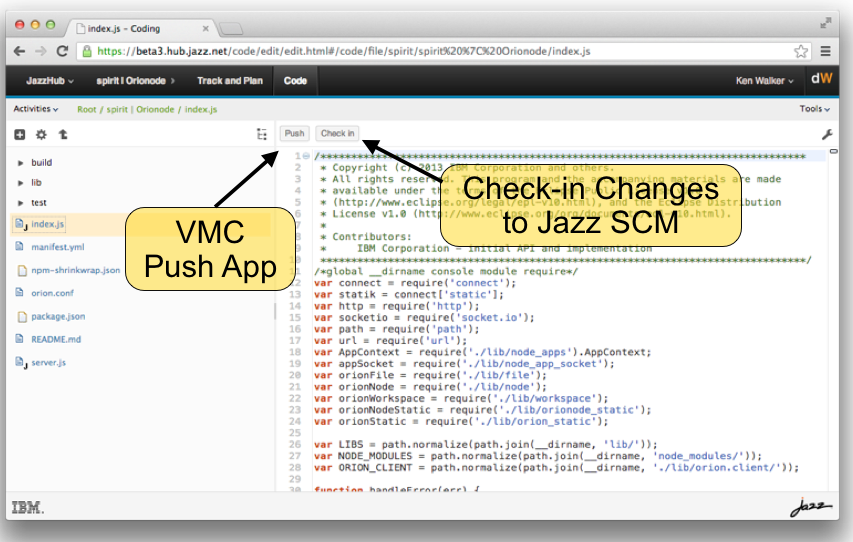
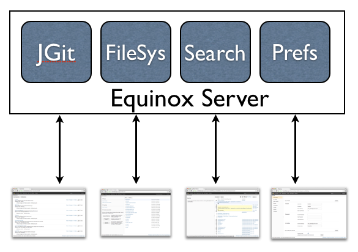

- New screen scots for clone, code, test, submit
- New screen shot for JSBeautify with new look
- Look for morphing software for logo?
- Look for image view click?
- Cobol screen shot ok?
- JazzHub screen shot(s)
- JazzHub wording - what it is
- Snippet example of embedding editor
Cloud Development goes Lightweight
The Open Source Orion Project
JAXConf US - Jun, 2013
kenwalker.github.io / @kwalker / @orionhub
Orion Project Lead
Start editing this talk at OrionHub.org
In the beginning...
Inside IBM Orion was started by some of the same Eclipse Team members from SWT & Platform team
The goal was to begin working on a platform to support the growing initiatives for Cloud
As IBM is founder of Eclipse, we wanted to leverage our experiences, investment and the governance model
Why Orion?
Fundamental change from other Eclipse projects
Shift to Web based application development/delivery
Replace complex IDE pages with Web workflows
Provide the pieces as a whole or consumable by Web teams in product (IBM and others)
Orion is an onramp for IBM teams & Community
Are developers really moving to the cloud?
The rise of products like Cloud9, CodeEnvy, indicate there is a desire for hosted development solutions
Progression to other CloudBased tools, Gmail, Dropbox, GitHub, Ohloh, CloudFoundry, AmazonWebServices
Developers are still skeptical of online tools but understand the complex nature of IDE setup has to change
How can Orion satisfy developers?
Follow a set of design principles, be agile
Embrace the modern browser capabilities
Create a platform that’s extensible
Create web components that are consumable
Enable cross-site workflows & integration points
Create a suite that provides what desktop tools do
...all in a browserClone a repository
Edit your application
Test it live
Check changes in
How are these pages constructed?
Orion has many templates by default
The necessary functionality for developers
Product teams can start with existing pages
Orion provides extensibility points to plugins
Extensibility is what sets Orion apart!!
Extensible in the browser?
"plugins" live right in the page.
Agnostic to where the plugin or code came from
No lock-in to plugin providers

How are plugins implemented
JavaScript implementation of OSGi Services API
Uses Promises for return types and follows the Lifecycle and Bundle State semantics used for Plugins
Implementation of Configuration Admin and Metatype for Plugin Settings and Schema
OSGI seems like overengineered Java stuff. I'm generally pretty skeptical of big frameworks that do everything for everyone. Usually they're a big pain.-Isaac Schlueter
Example JSBeautify Plugin
You provide html, javascript elements, from your site
In this case served up from a GitHub account
So how is Orion being consumed?
Hewlett Packard
HP DevAnywhere, the entire software development lifecycle in the cloud
Node.js Orion server including editor, plugins, extensions
 {kind=link}
{kind=link}
VMWare/Pivotal Scripted Editor
scr [filename] - improved content assist through introspection supporting AMD loading
{kind=link}
Mozilla in Firefox
Embedded in the debugger and scratchpad
{kind=link}
IBM JazzHub
IBM Cloud ALM solution supporting Jazz SCM and GitHub
{kind=link}
IBM RD Traveler
Cloud based cobol solutions
Cloudfier
A something something
Embedding in web sites
Airia web examples
Embedding in presentations!
/*global require window console */
var express = require("express");
var app = express();
app.get('/', function(req, res) {
res.send('Hello from Node');
});
app.listen(3000);
Extending the server(s)
Orion is available as a stand-alone Java based server (and WAR file) that takes 2 minutes to setup a multi-user cloud based development platform
Also available as a Node.js based application, with less functionality, but full editor and search capabilities
npm install orion
Here are some of our Java Server REST APIs
Matched to Orion Plug-ins calling these APIs
So, we need some dependencies
- Connect - extensible HTTP server framework
- sax - An evented streaming XML parser
- socket.io - Cross-browser easy WebSocket-like API
- deferred-fs - Provides a promise-based API for Node's filesystem APIs (written by Orion team)
- node-inspector - Web Inspector based nodeJS debugger
- npm - node package manager (built-in to Node)
You can extend it
Your application can use orion as a connect module
// Make sure that we can .use() the orion server as a connect module.
it('exports #createServer', function(done) {
app.use(orion({
workspaceDir: WORKSPACE
}))
.request()
.get('/file/project/fizz.txt')
.expect(200, 'hello world', done);
});
This is our test to verify it works
You can work on and contribute to it
- Orion Node Getting Started Guide
- Orion Node Developing
- Our Node tests suite is written in Mocha
Write shell extensions for Orion on Node is a good starting point (Ruby? Php? Lua?)
Find out more
Read our blog at Planet Orion
Check out the Orion BUZZ
Lots of information in the Orion Wiki
Follow @OrionHub on Twitter
Create an account and try it at OrionHub
kenwalker (github) / @kwalker / @orionhub
Orion Lead and Orion Dev Lead at IBM Canada
Clone this talk into OrionHub.org from GitHub